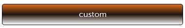
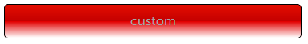
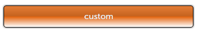

기존 테마 간단하게 커스터마이징하기 문서를 통해서 미리 mobello에서 제공하는 테마에 대한 기초적인 설명과 sass, compass에 대한 소개를 참고하시기 바랍니다. 테마를 컴파일 하기 위해서는 tau.scss 파일을 컴파일 하기 위해서는 먼저 ruby, sass, compass가 설치되어야 합니다. 다음 문서를 참고하시기 바랍니다. |
이 문서에서는 Mobello에서 제공하는 테마에 대해 기본적으로 이해하고, sass, compass에 대한 간단한 기초 지식이 있다고 가정하고 설명하도록 하겠습니다.
여기에서는 sass에서 제공하는 mixin에 대해 살펴보고, compass에서 제공하는 기능을 통해 새로운 테마를 직접 추가해 보도록 하겠습니다.
기존 테마 간단하게 커스터마이징하기 문서를 통해서 미리 mobello에서 제공하는 테마에 대한 기초적인 설명과 sass, compass에 대한 소개를 참고하시기 바랍니다. 테마를 컴파일 하기 위해서는 tau.scss 파일을 컴파일 하기 위해서는 먼저 ruby, sass, compass가 설치되어야 합니다. 다음 문서를 참고하시기 바랍니다. |
목차:
Mobello는 CSS를 관리하지 않고 scss 파일을 관리하고 있습니다. 그 이유는 Sass에서 지원하고 있는 다음 기능을 활용해서 테마를 쉽게 관리하고, 테마를 적용하기 위해서 입니다.
@mixin left($dist) {
float: left;
margin-left: $dist;
}
#data {
@include left(10px);
}
#data {
float: left;
margin-left: 10px;
}
http://sass-lang.com/ 에 방문해서 자세한 내용을 보시기 바랍니다. 또한 manning 에서 MEAP버전의 Sass and Compass in Action 서적을 참고하시기 바랍니다. |
다음은 border-radius를 적용하려는 예제입니다.
.simple { @include border-radius(4px, 4px); }
최종 결과 css파일을 보시면 자동으로 vendor namespace(-wekbit, -moz, -khtml)를 붙여주고 해당 vendor에서 사용하는 스타일 값을 자동으로 설정해 줍니다.
.simple {
-webkit-border-radius: 4px 4px;
-moz-border-radius: 4px / 4px;
-khtml-border-radius: 4px / 4px;
border-radius: 4px / 4px;
}
다음은 예전 방식으로 기술된 gradient와 새롭게 기술된 방식 둘다를 지원하는 예제입니다.
| 이 예제는 "Sass and Compass IN ACTION" page 111~112를 참고하였습니다. |
#pattern {
background: -webkit-gradient(
linear, 360deg, 360deg,
color-stop(0%, #bfbfbf),
...
color-stop(100%, #000000));
#pattern {
background: -webkit-linear-gradient(
360deg,
#bfbfbf 0%,
...
#000000 100%);
}
}
다음과 같이 background mixin에 linear-gradient mixin를 사용하면 vendor, syntax가 변경되더라도 상관없이 지원합니다.
#pattern {
@include background(
linear-gradient(
360deg,
#bfbfbf 0%,
...
#bf00bf 100%));
}
http://compass-style.org/ 에 방문해서 자세한 내용을 보시기 바랍니다. 또한 manning 에서 MEAP버전의 Sass and Compass in Action 서적을 참고하시기 바랍니다. |
Mobello에서 제공하는 mixin와 compass에서 제공하는 mixin를 활용하기 위해서는 우선 Mobello 테마에 대한 간략한 이해가 필요합니다.
Mobello에서는 컴포넌트에 대한 스타일룰을 정의하고 있습니다. (참고로 컴포넌트 최상위 DOM element에 적용되는 스타일입니다.)
.tau-button {
...
}
.tau-slider {
...
}
컴포넌트의 최상위 DOM element가 아닌 하위 element에 대해 적용되도록 스타일을 적용하기 위해서는 해당 컴포넌트의 DOM 구조에 자세히 알아야 하고, Sass로 정의되어 있는 scss파일을 직접 수정하야 하는 작업이기 때문에 이 문서에서는 다루지 않습니다. 커스텀 컴포넌트 개발하기 문서에서 DOM element를 구성하고 해당 컴포넌트에 대한 scss파일을 작성하는 예제를 통해서 살펴보시기 바랍니다. |
Mobello에서 제공하는 mixin는 많이 있으나 여기에서는 최상위 DOM element에 쉽게 적용될 수 있는 것에 대해 알아보도록 하겠습니다.
Button 컴포넌트의 default 테마에서는 dark, red, khaki, green type의 테마를 제공하고 있습니다. 추가적으로 사용자가 테마를 쉽게 추가하기 위해서 다음과 같은 mixin을 제공합니다.
Button에 대한 테마를 적용하는 예는 Button 컴포넌트 사용하기 문서를 참고하시기 바랍니다. |
tau-button-type : 버튼 타입 테마를 추가합니다.
/** @mixin tau-button-type ($type, $start-bgcolor, $stop1-bgcolor, $stop2-bgcolor, $end-bgcolor) |
tau-button-state : tau-button-type으로 추가한 테마의 상태(selected | highlighted | disabled) 일 때의 배경색을 설정합니다.
/** |
@include tau-button-type (custom, #00FF08, #00AB04, #009203, #00A604); @include tau-button-state (custom, highlighted, #00FE06, #01FE03, #00E003, #00FF03); @include tau-button-state (custom, selected, #01A300, #005200, #013800, #004D00); @include tau-button-state (custom, disabled, #40BE41, #409540, #408940, #409343);



여기에서는 Button에서 제공하는 type 테마를 추가하기 위한 mixin말고 직접 스타일 룰을 추가하는 방법에 대해 소개하고자 합니다.
CSS의 스타일 룰을 추가하는 방법과 동일하다고 생각하면 됩니다. 단, Mobello에서 제공하는 mixin을 사용하고 sass 문법으로 작성하시면 됩니다.
다음은 Compass에서 제공하는 Text-Shadow, Box-Shadow 입니다.
.tau-button {
@include text-shadow; // compass
@include box-shadow; // compass
...
}

다음은 Mobello에서 제공하는 border를 둥글게 하는 tau-round mixin입니다.
.tau-button {
...
@include tau-round; // mobello
}